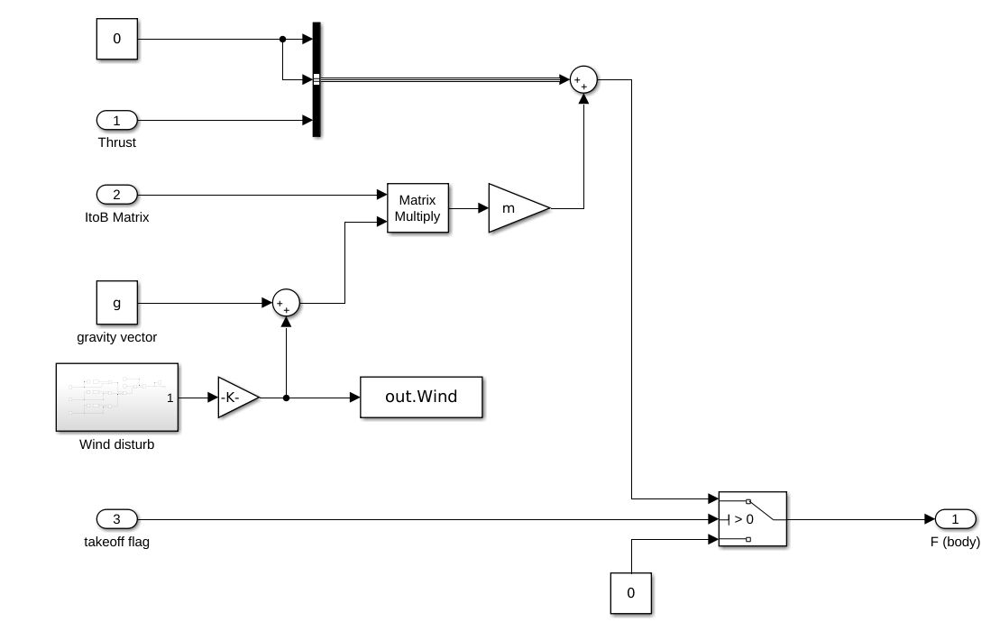
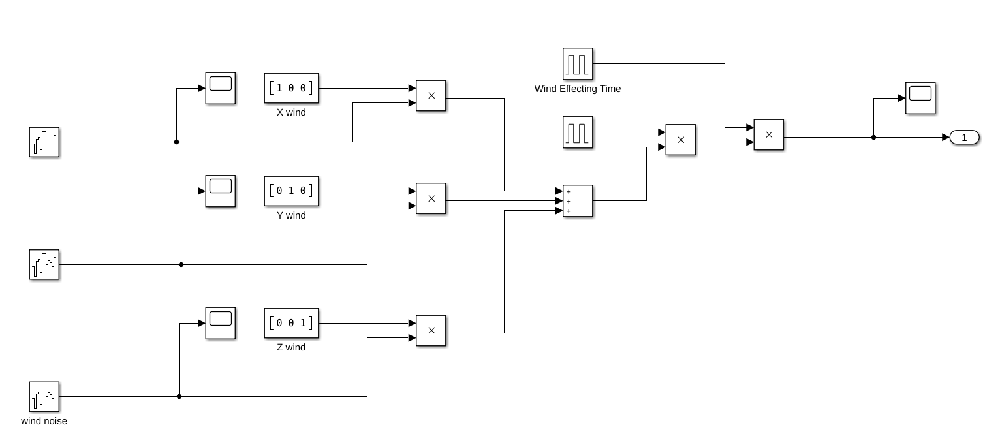
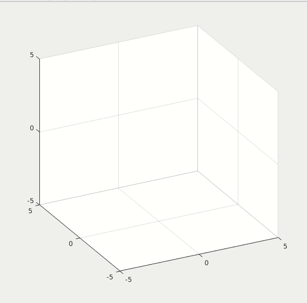
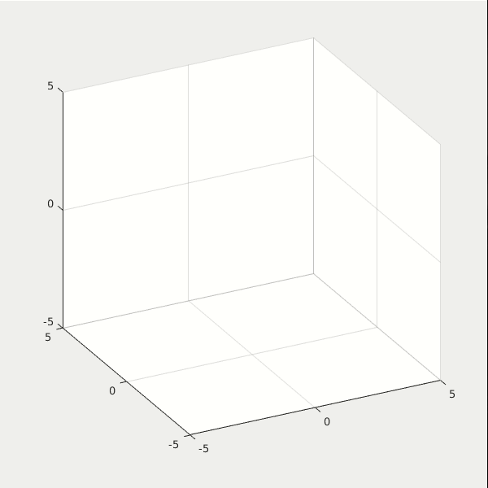
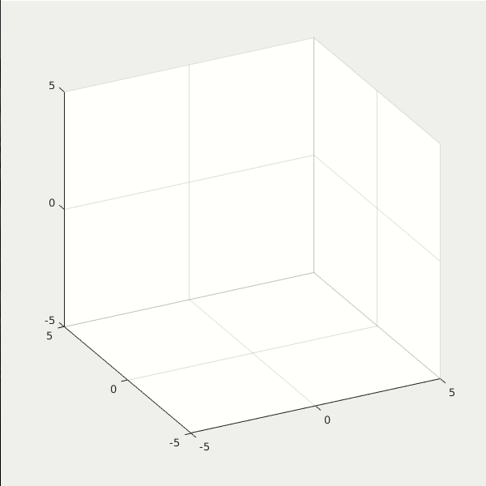
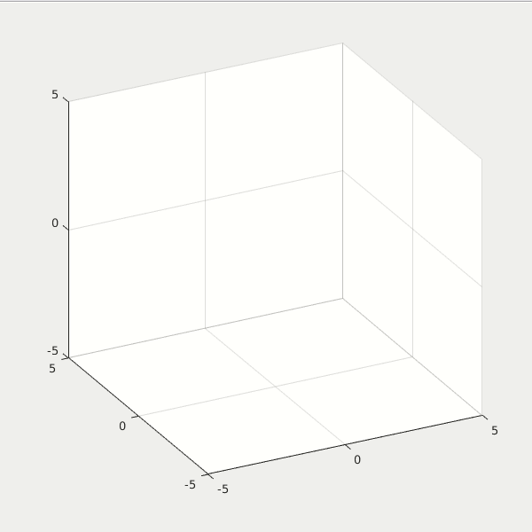
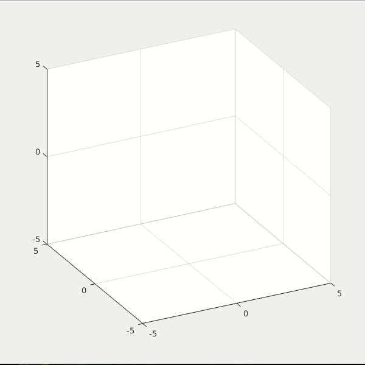

(Wind) 6-Dof Quadcoptor Simulation and Control
Introduction
This simulation models the wind disturbance. The purpose is to add in the real world effect. Using the concept in this model, users can further model other real world terms, for example sensor measuring noise and motor output fluctuation.
The wind disturbance is written in the [Force and Environment/ Wind disturb] block. Users can specify any WindLevel, Noise power, Wind sample time to see how the drone behaves under different condition.
Inside Force and Environment subsystem:

Inside Wind Disturb block:

Demo
WindLevel set from [0 1 5 8 10 11]. Under WindLevel 10, the drone can still stabilize itself, although at WindLevel = 10, the drone actually crashes because its Z position is negative. For WindLevel over 11, the drone can't stabilize anymore.





Steps to Run this Project
- Set the initial values of the drone by running the script SetDroneControl_copt.m
- Open the Simulink Model: DroneControl_WindPID.slx and run it.
- Open the animation script: animation_direct.m and run it to see the result.
Access to MATLAB Project
The access fee to the project is US 5 dollars.
If you are intereted in getting the access of the project file, you can send the payment by this link: Access Fee Payment Link
After the payment is confirmed, you will be given the access.
Or if you have any questions or problems about the transaction (sometimes the link doesn't work), you can contact me via my email: j2855001@gmail.com